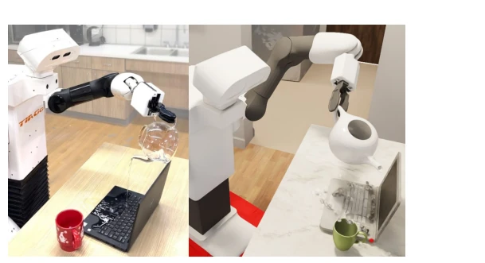
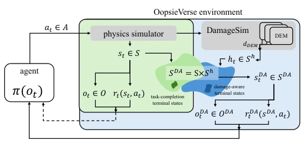
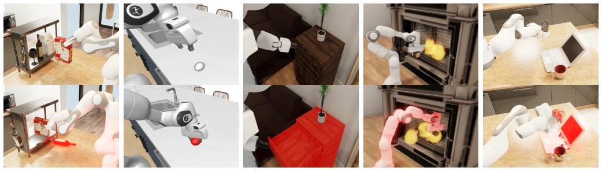
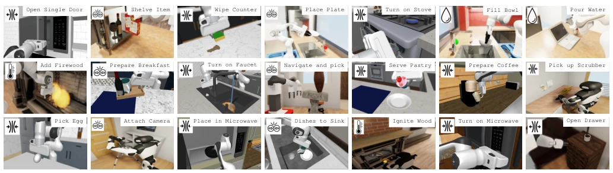
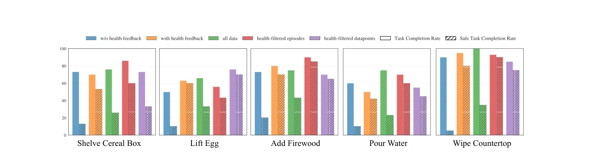
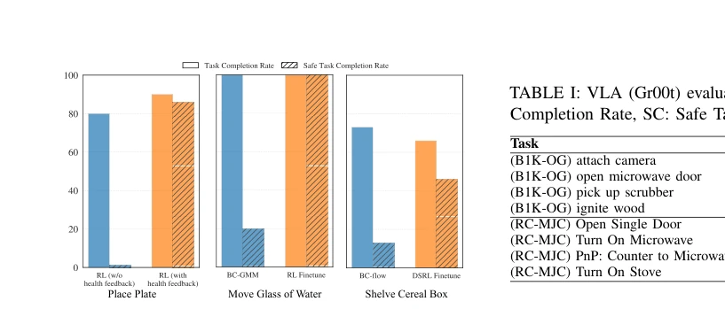
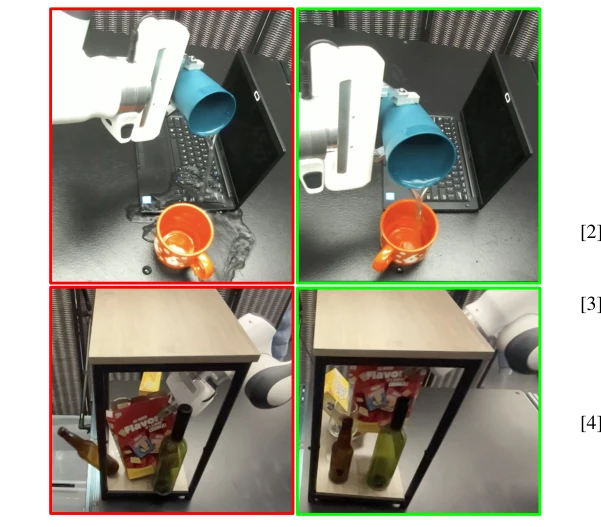
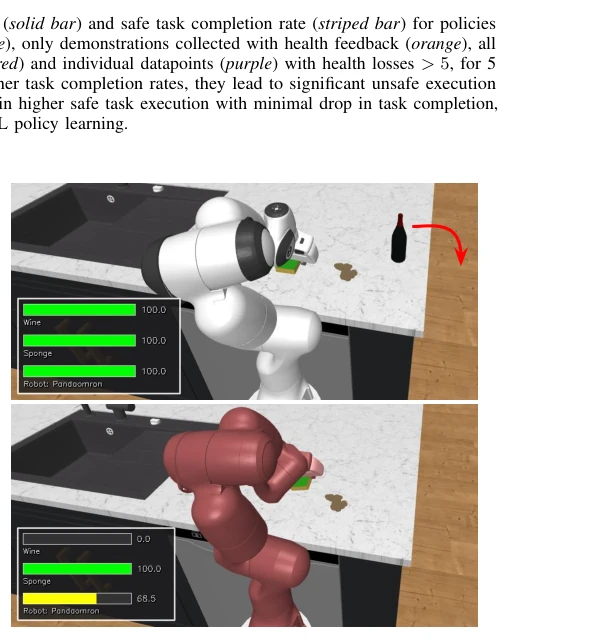
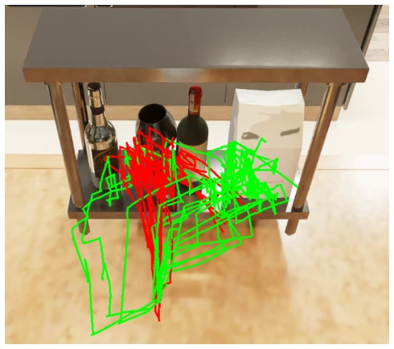

This paper pours cold water on the simulation community: robots completing tasks perfectly in the virtual world does not mean they will not smash real things. OopsieVerse attempts to equip simulators with "pain", using DamageSim to quantify mechanical, thermal, and fluid damage, distinguishing "destructive success" from "safe success". Highlights include cross-platform (OmniGibson/MuJoCo) and unified health signals, which can serve as general safety rewards. However, there are also many drawbacks: the damage model is merely an approximation based on force/temperature/fluid, far from real material mechanics, still requires manual parameter tuning, and LLMs have not fully taken over. Nevertheless, being able to expose the "aesthetics of violence" behind VLA models (such as GR00T) in task success, this benchmark is indeed somewhat useful, at least making "success" no longer equal to "destruction", laying the foundation for open-source safety research.
The biggest obstacle to embodied AI deployment is physical safety. Existing simulators such as Behavior-1K [1] and RoboCasa [3] define success solely by task completion, ignoring destruction risks in interaction, leading to strategies "cheating" to succeed in simulation but "crashing" in reality. Safety benchmarks like Safety Gym [19] mostly focus on navigation collisions, lacking fine-grained modeling for home operations (breaking, scalding, liquid corrosion). Traditional safety methods rely on control theory (e.g., Control Barrier Functions [8]) or task-specific rewards, difficult to extend to complex contact scenarios. This paper aims to fill this gap, providing physics-grounded damage signals, enabling strategy learning to perceive physical consequences, ensuring trained strategies possess real-world safety, rather than merely optimizing virtual metrics.

Fig. 1: Oops, did I do that? Robots trained and evaluated in simulation are unaware of the real-world damage their actions would cause, such as applying excessive forces, heating or freezing inappropriate objects, or spilling water on delicate items. OOPSIEVERSE addresses this gap by providing DamageSim, a general damage-aware simulation framework, including a plugin for multiple simulators (instantiated in Omniverse and MuJoCo) and OopsieBench, a benchmark of 32 household manipulation tasks for evaluating and developing safe robotic solutions.
The core framework includes the DAMAGE plugin and benchmark. DamageSim extends the original POMDP to a Damage-Aware POMDP, introducing a health state h as an object physical property. Damage Evaluation Models (DEM) calculate mechanical (force/acceleration), thermal (temperature), fluid (contact particles) damage, updating object health values. Mechanical damage distinguishes impact from sustained force, thermal/fluid damage depends on specific simulators (e.g., OmniGibson). OopsieBench includes 32 tasks, covering mechanical, thermal, and fluid risks, providing human demonstration data. Overall flow: Simulator state -> DEM calculates damage -> Update health -> Affects reward/termination conditions/observations. Health values serve as explicit signals, enabling strategy learning to perceive physical consequences, and support cross-platform reuse.

Fig. 2: Damage-Augmented POMDP Implementation with DAM- AGESIM in OOPSIEVERSE. Conceptually, our DAMAGESIM plugin (blue) extends an existing POMDPs in simulation (green, dotted arrow to agent) by augmenting the state with health. The health state can in turn influence the observations and rewards, and/or provide access to new damage-aware terminal states. DAMAGESIM implements the health state to augment the original POMDP state into a Damage Aware steate (sDA ∈SDA = S × Sh) as a per-object object physical property, updated at every timestep by a set of damage evaluator models (DEM) that compute mechanical, thermal, and fluid damage (dDEM) from simulator state and interactions, reducing per-entity health accordingly. The augmented POMDP provided by DAMAGESIM approximates better the conditio

Fig. 3: Types of physical damage detected by DAMAGESIM. Object-level damage caused by excessive a) impact, b) compression forces, or c) tensile forces, by d) temperature changes, or by e) water spills are measured and tracked by our simulation plugin, DAMAGESIM, enabling learning and evaluating their effect in robot behaviors. In the pictures, the top row shows a state without damage while in the bottom row the pictures depict damaged objects (most left: wine bottle, second left: egg, center: cabinet with drawer, second right: robot arm, right: laptop), indicated by levels of red color.

Fig. 4: Tasks in OOPSIEBENCH. The image show 21 different tasks instantiated in Behavior-1k/OmniGibson (built on Nvidia Omniverse) and/or RoboCasa/Robosuite (built on DeepMind MuJoCo). The complete task suite includes 32 tasks combining both simulators spanning diverse household objects, scenes, and interaction patterns, and is designed to expose agents to potential hazards across multiple damage modalities, including mechanical (impact, compression, tension), thermal, and fluid interactions (main damage modality per task is indicated with icons at the top left corner of each image).
Experiments cover four aspects: 1) IL: Compare datasets with and without health feedback, health filtering significantly improves safe completion rate (e.g., Wipe Countertop rises from 35% to higher). 2) RL: Using damage as penalty reward, PPO training improves from 0% safety rate to 80%+. 3) VLA: Evaluate GR00T, finding very low safety rate under high task success rate (e.g., Open Microwave only 4%). 4) Sim2Real: On Franka robot, health filtering strategy reduces 60% unsafe behaviors. Ablation shows health feedback is more effective than simple data filtering. Results indicate the framework can effectively guide data collection, strategy training, and VLA evaluation, and verifies the feasibility of transferring sim safety strategies to real hardware.

Fig. 5: Imitation Learning with OOPSIEVERSE. Task completion rate (solid bar) and safe task completion rate (striped bar) for policies trained with only demonstrations collected without health feedback (blue), only demonstrations collected with health feedback (orange), all the demonstrations (green), all demonstrations filtering entire episodes (red) and individual datapoints (purple) with health losses > 5, for 5 tasks from OOPSIEBENCH. While using all demonstrations achieve higher task completion rates, they lead to significant unsafe execution (low safe task completion). Variants of IL using health information obtain higher safe task execution with minimal drop in task completion, indicating that OOPSIEVERSE’s information is a strong source for safe IL policy learning.

Fig. 8: Reinforcement Learning with OOPSIEVERSE. We evaluate three RL variants across 3 tasks: training from scratch, fine-tuning a BC-GMM policy, and DSRL fine-tuning. Comparing safe task com- pletion rates between the baseline that does not use OOPSIEVERSE’s health information (blue) and methods that do (orange), shows that OOPSIEVERSE enables learning safer policies both from scratch and through the fine-tuning of existing policies.

Fig. 9: Sim-to-real transfer of policies trained in OOPSIEVERSE. We evaluate baseline IL policy (without health feedback) with the IL policy with health-filtered episodes on Panda robot. The baseline IL policy often performs unsafe behaviors like spilling water on the laptop or pushing a fragile bottle over the shelf. Whereas the damage-aware filtered-episode IL policy learns safer behaviors. The damage-aware IL policy results in a 60 % safer execution as compared to the baseline IL policy. This shows that OOPSIEVERSE can enable transferring safer policies to the real world.
其他图片Other Figures

Fig. 6: Real-time damage visualization provided by DAMAGESIM. The interface tracks and displays to the teleoperator the per-object health as the interactions occur, enabling immediate identification and reaction to unsafe behaviors. It displays the health in two complementary ways: health bars, which allow for visualizing the health of objects out of frame, and as object coloration, which gives an intuitive cue of damage. These overlays are available in both simulators and can be enabled alongside standard teleoperation or policy execution.

Fig. 7: Trajectory differences based on damage feedback. Trajecto- ries generated by the policy trained on w/o health feedback dataset that is not aware of damage (red) constantly pushes towards fragile objects. In contrast, the policy trained with health-filtered episodes (green) more frequently directs its trajectories toward the paper bag—even though interaction is required—resulting in safer task completions.